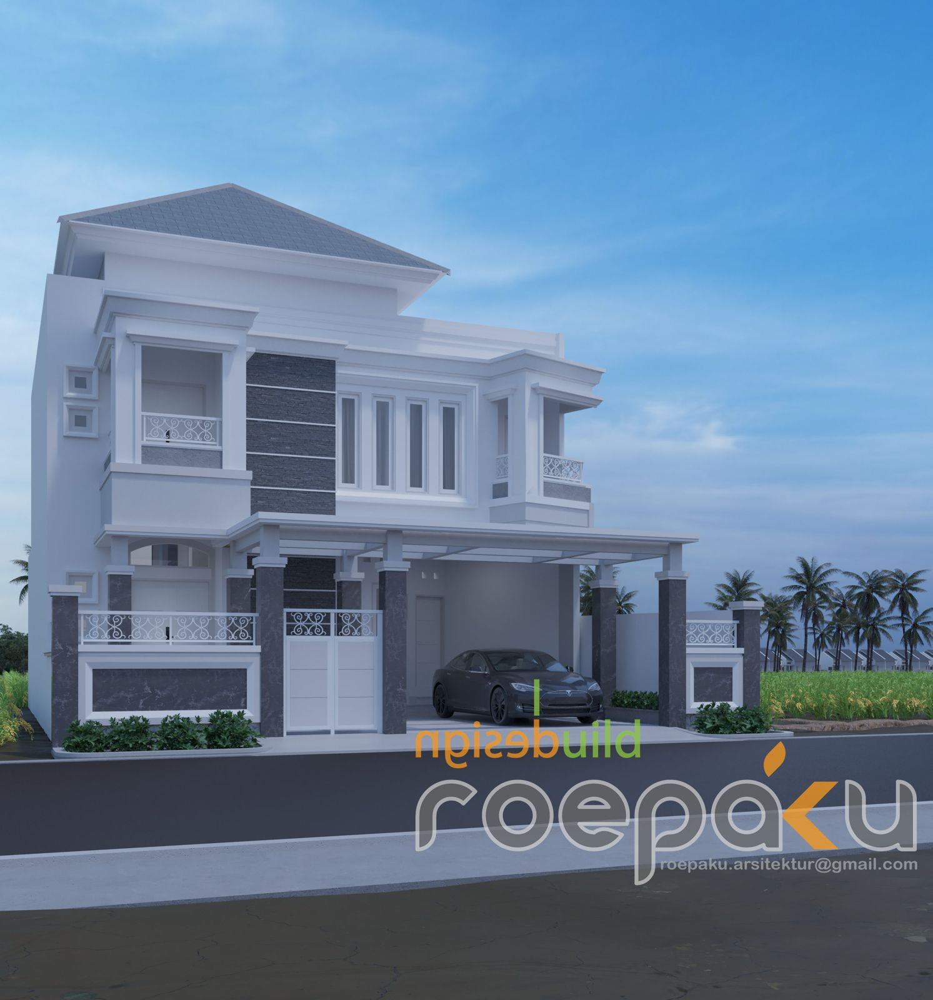
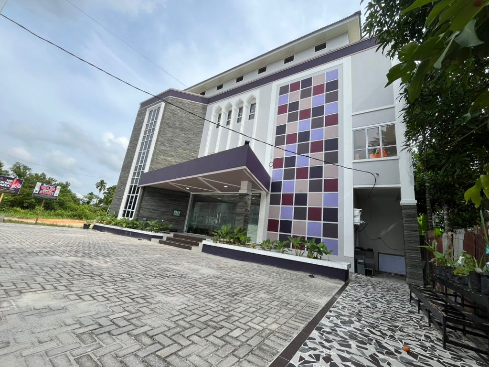
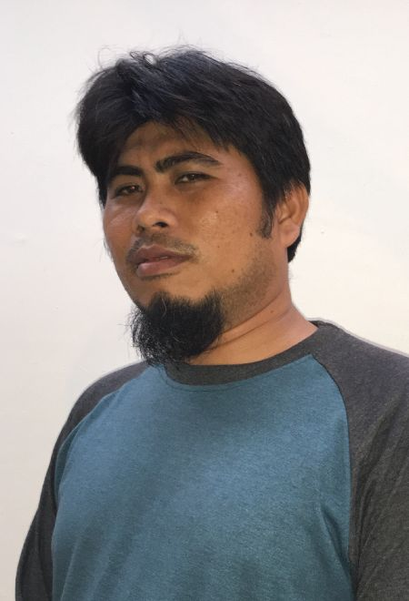

01
Rancang Bangun (Design & Build)
Layanan perencanaan dan pembangunan terpadu dari desain hingga serah terima.
KONSTRUKSI
Roepaku Bangun Persada. Developer, General Contractor, & Supplier. Penyedia jasa konstruksi gedung dan renovasi.
Lihat Portofolio ProyekLAYANAN KAMI
01
Layanan perencanaan dan pembangunan terpadu dari desain hingga serah terima.
02
Pengerjaan struktur baja presisi tinggi untuk gedung dan fasilitas industri.
03
Desain dan pemasangan tampak luar bangunan yang estetis dan fungsional.
04
Perawatan dan perbaikan struktur gedung untuk menjaga nilai aset.
05
Penataan ruang dalam dan luar ruangan yang selaras dengan fungsi bangunan.
06
Konstruksi gedung perkantoran, fasilitas umum, dan perumahan komersial.
PORTOFOLIO

Contoh: Taman Firdaus, Bumi Melur, Arima Cluster (Pekanbaru)
Jakarta & Cilacap, 2020-2022

Pekanbaru
Jakarta, 2019
TENTANG KAMI
Berdiri sejak tahun 2017, Roepaku Bangun Persada telah lebih dari 7 tahun berkarya di industri konstruksi. Kami dipercaya oleh berbagai pihak, mulai dari pemerintah, swasta, hingga perorangan. Setiap proyek dijalankan dengan komitmen tinggi terhadap standar Keselamatan dan Kesehatan Kerja (K3).
VISI
Menjadi salah satu perusahaan konstruksi terbaik di Indonesia yang berkelanjutan, dengan kompetensi SDM, teknologi, dan tata kelola yang baik.
MISI

LEADERSHIP
Principal Architect & Leader
Berpengalaman sebagai Principal dan Project Architect di berbagai proyek komersial dan institusi. Memegang Sertifikasi Keahlian (SKA) Arsitek Madya No. 1.1.101.2.027.09.1155778.
MARI BERKOLABORASI
Email: roepaku.arsitektur@gmail.com
LOKASI KAMI
Kantor Pusat:
Jl. HR. Subrantas Perumahan Taman Firdaus Blok D No. 05, Sidomulyo Barat - Tampan, Kota Pekanbaru, Riau.
Cabang:
Ruko Burgundy Summarecon Bekasi, Blok RAL/38, RT.001/RW.001, Harapan Baru, Kec. Bekasi Utara, Kota Bks, Jawa Barat 17123